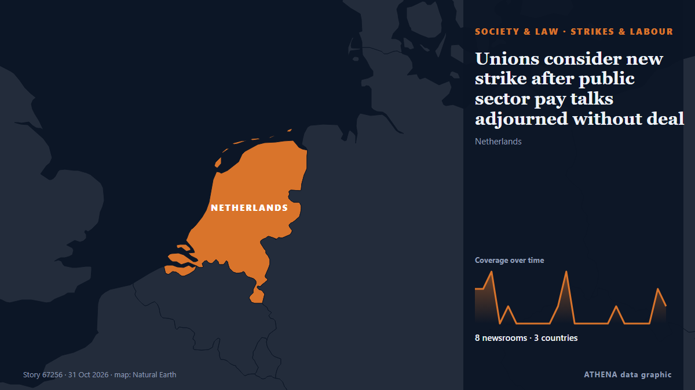

Grèves et travail
| 18 oct. | 0 |
|---|---|
| 19 oct. | 0 |
| 20 oct. | 0 |
| 21 oct. | 0 |
| 22 oct. | 1 |
| 23 oct. | 2 |
| 24 oct. | 0 |
| 25 oct. | 0 |
| 26 oct. | 3 |
| 27 oct. | 2 |
| 28 oct. | 4 |
| 29 oct. | 2 |
| 30 oct. | 6 |
| 31 oct. | 0 |
Les titres sont affichés en anglais, tels que publiés.

Unions consider new strike after public sector pay talks adjourned without deal
As talks were adjourned shortly before midnight on Friday, a union spokesperson said they’d reached an impasse. de TheJournal.ie
Berri warns against ending UNIFIL's mission in meeting with German minister
Speaker Berri warned Thursday of the danger of ending UNIFIL's mission before Resolution 1701 is fully implemented and Israeli forces completely withdraw from southern Lebanon. de Naharnet
Seafarers’ and Railway Workers’ Strikes Disrupt Public Transport in Greece
Teachers and civil servants are joining seafarers in their planned work stoppage and protests on Friday across several Greek cities. de to vima
EU to slap new €2 fee on online shopping orders from outside Europe
The EU will charge an extra €2 "processing fee" on parcels imported into the European Union from Sunday November 1st in a bid to reduce the influx of cheap Chinese products bought on the internet. de The Local Austria
Who gets paid when the credits roll
Punjab plans royalty law to protect film professionals. de Express Tribune
Jamia Millia Islamia agrees to hold student elections after weeks-long protest
The protest demanding the restoration of the Jamia Millia Islamia Students’ Union, which was dissolved in 2006, entered its 10th day on October 22. de Hindustan Times
Rank-and-file gardaí to engage in work-to-rule during EU presidency meetings next month
Garda Commissioner pledges to reduce overtime from next month. de The Irish Times
AU Commission Chairperson urges Africa to capture greater value from resources, renews call for global Financial reforms
Addis Ababa, October 29, 2026 (FMC) — African Union Commission Chairperson Mahmoud Ali Youssouf has called for stronger African economic sovereignty, equitable global financial arrangements and… de Fana Broadcasting Corporate
EU scraps ‘associate member’ offer for Canada
A group of countries including Germany, Greece and France all objected to mentioning associate membership in a joint EU-Canada statement. de Politico Europe
TUC rejects FG’s proposed ₦70,000 wage award to workers
Says govt has capacity to raise pay of lowest-paid worker to ₦300,000 By Johnbosco Agbakwuru ABUJA — The Trade Union Congress of Nigeria (TUC) has rejected the proposed ₦70,000 monthly wage award for… de Vanguard
Mofokeng’s European adventure gathers pace after latest Union masterclass
Relebohile Mofokeng scored and assisted as Royale Union Saint-Gilloise fought back from two goals down to beat Cercle Brugge 5-2, continuing his impressive start in Belgium. de IOL
EU backtracks on Canada becoming ‘associate member’
Several EU leaders pushed for the term to be removed from a joint draft statement with Canada. de Free Malaysia Today
Rs 25,000 crore in taxes, 12 lakh jobs: Vaishnaw backs mobile PLI scheme
India's mobile phone manufacturing sector has generated Rs 25,000 crore in direct tax collections and Rs 3,000 crore in GST. de Times of India
Clocks go back this Sunday: When daylight saving time ends in Greece
Clocks will be turned back one hour on October 25, giving people an extra hour of sleep as winter time takes effect. de ProtoThema English